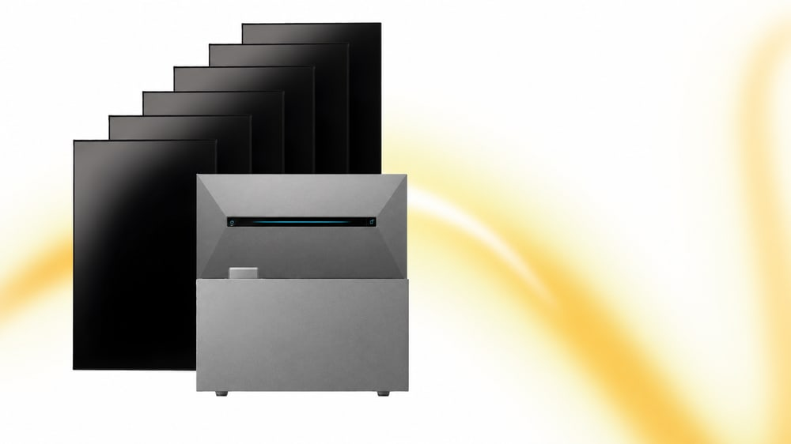
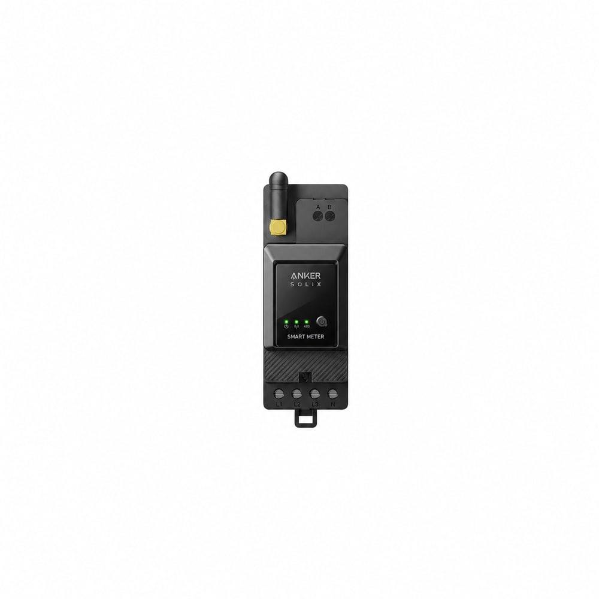

PV-Eingang
3 MPPT, max. 10 000 W Eingangsleistung, 18 A je MPPT. Module werden auf dem Dach in einer geplanten Belegung angeschlossen.
Hannover · für Hauseigentümer
Anker SOLIX auf dem Hausdach
Wir planen Module auf dem Hausdach, die Unterkonstruktion, die DC-Seite und ein Anker-SOLIX-Speichersystem mit festem Anschluss. Garagendächer sind ein optionales Extra.
Öffentlich dokumentiertes Kernprodukt: Anker SOLIX Solarbank Max (AE111). Angaben laut Anker SOLIX, Stand der Herstellerseite; Gerätegenerationen können im konkreten Angebot abweichen.
3 MPPT, max. 10 000 W Eingangsleistung, 18 A je MPPT. Module werden auf dem Dach in einer geplanten Belegung angeschlossen.
Nennkapazität 7 kWh LiFePO₄, erweiterbar mit BP7000-Modulen bis 42 kWh laut Hersteller. Welche Ausbaustufe zu Ihrem Verbrauch passt, rechnen wir im Angebot – nicht als Website-Set.
Anker nennt öffentlich 800 W über Schutzkontakt, bis 3,5 kW über Steckverbindung und bis 4,6 kW im Festanschluss. Wir planen den professionellen Festanschluss an die Hausinstallation.
Weitere Herstellerpunkte, die wir nicht überhöhen: IP66, Betriebstemperatur −20 °C bis 55 °C, Insel-AC laut Datenblatt 3,68 kW, App über WLAN/Bluetooth. Ob Backup im Haus genutzt wird, hängt von Installation und Absicherung ab – das ist keine automatische Ersatzstromzentrale für alle Verbraucher.
Aus typischen Dachprojekten (ohne Kundendaten): Module, dachgerechte Unterkonstruktion, Dachmontage, DC-Verkabelung inklusive Wege, AC-Festanschluss, Speicheraufstellung, Prüfung und Inbetriebnahme, Anträge. Zählerschrank und Wallbox nur, wenn das Projekt sie braucht und sie beauftragt sind.
Modulplanung auf dem Hausdach. Garagendach nur nach Extra-Prüfung.
Passend zur Dachdeckung, nicht als Balkon-Set.
Verkabelung und Wege bis zum Speichersystem.
AC-Einbindung, Absicherung, Smart-Meter nach Systemvorgabe.
Einzelpreise aus internen Angeboten veröffentlichen wir nicht. Eine Solarbank-Max-Konfiguration mit mehr Speicher, anderem Modulraster oder Wallbox ist kein Standardpaket dieser Website.

Beim Festanschluss ist der Weg in die Zähleranlage der kritische Pfad. Nicht jedes Haus braucht einen neuen Schrank; jedes Projekt braucht eine ehrliche Prüfung.
Wenn Felder, APZ/Kommunikationsbereich oder der Zustand TAB-konform nicht mehr darstellbar sind.
Zusätzliche Abgänge, Schutzgeräte oder Platz für den Festanschluss im bestehenden Gehäuse.
Leitungsschutz, Überspannung, Potentialausgleich von Dach und Speicher – Umfang nach Messung und Bestandsplan.
Zweirichtung, Steuerbarkeit, Vorgaben von Netzbetreiber und MSB. Wallbox-Absicherung nur bei beauftragter Wallbox.

Anker weist selbst darauf hin, dass über 800 W der Netzanschlussantrag durch eine qualifizierte Elektrofachkraft laufen muss. Welche Unterschriften Sie leisten, listen wir vorab. Keine zugesagten Bescheidfristen, keine Förderberatung als Produkt.
Netzanschlussunterlagen und Abstimmung zur angebotenen Festanschluss-Leistung.
Zählerkonzept und Steuerbarkeit, soweit für diese Anlage nötig.
Registrierung mit Ihrer Vollmacht. Den Umfang schreiben wir vor der Unterschrift auf.
Sechs Schritte, die wir so halten – ohne erfundene Wartezeiten.
Ob die Solarbank-Max-Logik zu Dach, Verbrauch und Zählerschrank passt.
Belegung, Leitungsweg, Schrankbestand, Festanschluss-Machbarkeit.
Modulzahl, Speicherausbau, Elektroumfang – individuell.
Netz, MSB, MaStR zur angebotenen Anlage.
Dach, DC, Festanschluss, beauftragte Schrankarbeiten.
Messung, Einweisung, Dokumentation.
Nein. Wir planen, montieren auf dem Hausdach und schließen fest an die Hausinstallation an.
Dachtaugliche Module nach Planung (u. a. gängige TOPCon-Glas-Glas-Typen). Eine feste Marke nennen wir hier nicht, weil sie projektabhängig ist.
Ja, als Extra nach Elektroprüfung. Sie ist nicht Bestandteil jeder Anker-Dachanlage.